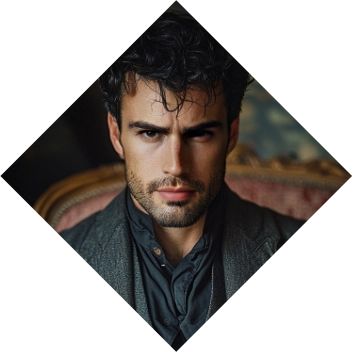

Xandros Solomon
Xandros Solomon
The Time Traveler
Xandros Solomon, a time-traveling mage of exceptional prowess, is a beacon of unwavering dedication in the annals of history. As a guardian of the temporal tapestry, Xandros belongs to the enigmatic A.R.C. (Agents of the Relativity Chronoscape) in the far-flung future, a military organization devoted to the preservation of critical historical events. To do so, the organization has developed a safe method for the agents to travel, riding the consciousness of a past family member.
Armed with mystical abilities and the wisdom of ages, Xandros embarks on perilous journeys through time, facing history's trials with both the might of a warrior and the care of a brother. His mission within A.R.C. is clear: prevent temporal disruptions that could unravel the fabric of reality itself. With every leap through the ages, Xandros exemplifies the indomitable spirit of the A.R.C. agents, defending the past to ensure the integrity of his future and that of his family. ❧
Plot Hooks.
He's the action hero muse. So if you got any plots that have to deal with militar action, big guns and a strong sense of justice, he's the guy for you. Smut wise, uniforms, power play, control, feminization and exerting his power over your muse are things that get him hard. Period pieces where he knows he is out of time (á la Outlander) are a must.Signature Motif.
Time Travelng. He will always look like he doesn't belong and will have technology, tools or items that do not belong to the time he is in. These are really good ice breakers.Perfect for...
Period Smut. Want to know how the primitive men did it? How the Victorian gents got their freak on? Visit the Moulin Rouge or perhaps visit the Old World? This is the muse you should do it for you. Praising, power play, uniform and feminization are also very much part of his threads.Goal
Rescue.
Being part of the ARC Sentinels, Xandros has one goal in his life: to keep his family safe. So he hijacks the consciousness of other members of his family in the past to interact with said period, avoiding critical problems that affect Xandros' future.obstacle
Opposing Forces.
However, in doing so, he exposes himself and the members of his family to be persecuted by the magic they create. Since most of his family members belonged to the Traditions during times of high oppression against the Technocracy, he is putting his family (and his future) in danger.«Let's do the Time Warp again!»
Personal Data
Alexandros "Xandros" Solomon
Name
38
Age
09/Dec/1987
DOB
Etherites
Sect
Brown
Hair
Hazel
Eye color
Adventurer
subgroup
White
Ethnicity
British
Nationality
Recognized (III)
Status
1.83m
Height
80 kg
Weight
English and Greek
Languages
Male
Gender
Homosexual
Preference
Professor - Quantum Reality
Profession
Top
Position
8" / 5"
length / Girth
Theo James
Faceclaim
Professor (Adept)
Rank
ENTP
MBTI
Character sheet
Attributes
Distinctions
skills
Paradigm
Turning the Keys to Reality

Nature
Vigilante
Demeanor
Stubborn


Just
Resolute
Determined
Courageous
Protective
Ruthless
Vengeful
Inflexible
Obsessive
Judgmental
Resolute
Determined
Courageous
Protective
Ruthless
Vengeful
Inflexible
Obsessive
Judgmental
Insightful
Contrarian
Open-minded
Thoughtful
Creative
Obstinate
Provocative
Intrusive
Disruptive
Argumentative
Contrarian
Open-minded
Thoughtful
Creative
Obstinate
Provocative
Intrusive
Disruptive
Argumentative
Strength
Dexterity
Stamina
Charisma

Manipulation
Composure
Intelligence
Wits
Resolve

Areté
🙪
Specialties
Inventions
Martial Arts
Seduction
Quantum Physics
Technology
Athletism
Insight
Science
Academics
Empathy
Occult
H-Technology
Awareness
Subterfuge
Brawl
Survival
Energy Weapons
Fire arms
Medicine
Other skills

Focus
Paradigm
Why?
Turning the Keys to Reality Xandros believes the Universe can be measured, thus, it follows the laws of logic. Mages are Special because they know how to bend these laws into creating new things. For him, Ascension means knowing everything. An Ascended universe is one where all Men can understand the Universe and use it for their own benefit.
Practices
How?
Alchemy, Hypertech, Weird Science: Alchemist of the past are today's chemists. So in a way, Xandros does a mixture of both Hypertech and Alchemy to create Weird Science.
Paraphernalia
With what?
The following is a list of tools that he often uses:Potions and Pills
Enchantments
Visual Contact
Vocalization
Electrical Devices
Aromas and Perfumes
Interface Body-Brain

Spheres

Etheric Chemistry
Adept
Matter PerceptionBasic Transmutation
Alter Form
Complex Transformation
Contagious Ether
Adept - affinity
Immediate Spatial PerceptionsSense, Touch, Thicken And Reach Through Space
Pierce Space
Seal Gate
Co-Locality Perception
Rend Space
Co-locate Self
Ward

Noetic Sciences
Initiate
Sense Thoughts and EmotionsEmpower Self
Mind Shield

Metaphysical Ether
Initiate
Etheric SensesEffuse Personal Quintessence
Consecration
Backgrounds


Signature Assets
Mechanical Aptitude
Able to see how Ether works, how it wants to be shaped and sized. He has an aptitude for mechanical devices which allows him to reroll Hitches in Technological related feats.
Cloak of the Seasons
By some strange reason, perhaps due to the extreme training of the Adventurers, Xandros is unaffected by extreme climate changes. This comes in handy as he's one of the few agents who is able to be sent back in time without suffering the effects of Paradox.
Enchanting Feature: Smile
A smile that charms, disarms and sometimes, disrobes. Can add a D6 to the dice pool when required.
Other Assets
Backup
As a recognized Professor from the Adventurer guild, other Scientists tend to lend a hand and be of service. Normally there are four of them, your character is encouraged to take such role and lend a hand.
Laboratory
He has a small space in the ships of A.R.C. which he can use as a workshop to work out a few of his own inventions and gadgets.
Requisitions
As one of the agents of A.R.C. he has received a series of items that allow him to complete the missions. These items include a nanobot suit which can be altered to look like any other fabric in texture and form, communication devices to understand the language of the time and many more.